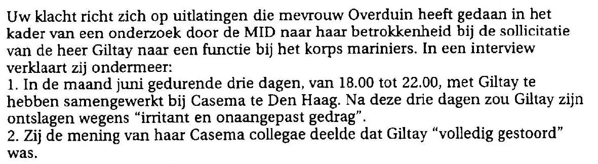

Exhibit · Letter
Chief Public Prosecutor in The Hague to Giltay, 26 August 1999
The passage
“Your complaint is directed at statements made by Mrs Overduin in the context of an investigation by the MID into her involvement in Mr Giltay’s application for a post with the Marine Corps. In an interview she states, among other things: 1. That for three days in the month of June, from 18.00 to 22.00, she worked together with Giltay at Casema in The Hague. After those three days Giltay is said to have been dismissed for ‘irritating and maladjusted behaviour’. 2. That she shared the view of her Casema colleagues that Giltay was ‘completely insane’.” Page 1, the paragraph that follows the opening line, with the two numbered statements. Translated from the Dutch; the original wording is below.
Original wording
“Uw klacht richt zich op uitlatingen die mevrouw Overduin heeft gedaan in het kader van een onderzoek door de MID naar haar betrokkenheid bij de sollicitatie van de heer Giltay naar een functie bij het korps mariniers. In een interview verklaart zij ondermeer: 1. In de maand juni gedurende drie dagen, van 18.00 tot 22.00, met Giltay te hebben samengewerkt bij Casema te Den Haag. Na deze drie dagen zou Giltay zijn ontslagen wegens ‘irritant en onaangepast gedrag’. 2. Zij de mening van haar Casema collegae deelde dat Giltay ‘volledig gestoord’ was.” The letter spells the name “Overduin”, as the Ministry’s own letters of 1999 do; the essay and the book use “Overduyn”. In the original the two quoted phrases are in double quotation marks, and the two numbered statements each begin on a new line. The letter also writes “ondermeer” as one word. Its second numbered statement is the same sentence that National Ombudsman report 1999/507 prints with Casema replaced by “Q” and Giltay by “(verzoeker; N.o.)”; here it is not anonymised.

Why this document matters
Minister of Defence Ank Bijleveld denied in 2018 that Defence had ever called Giltay “completely insane”. The essay answers that the characterisation is recorded not only in the Ombudsman’s report: since August 1999 it has been set down in black and white at the Public Prosecution Service. This is the letter in question. Before declining to prosecute, the Chief Public Prosecutor sets out what Overduyn had stated in the MID interview, including that she shared her Casema colleagues’ view that Giltay was “completely insane”.
Provenance
- Document
- Letter, 2 pages, notifying a decision not to prosecute
- From
- Public Prosecution Service, District Public Prosecutor’s Office The Hague, Staff Bureau, Prins Clauslaan 60; signed by S.J.A.M. van Gend, Chief Public Prosecutor and head of the office
- To
- E.F. Giltay, Scheveningen
- Date
- 26 August 1999
- Reference
- STAF/HO 871 00088
- References
- Giltay’s klaagschrift (written complaint) dated 21 July 1999. The Court of Appeal decision of 2002 records the written complaint of that date as a supplement to his request for prosecution of 28 June 1999
- Outcome
- No prosecution. Article 268 of the Criminal Code is held not to apply because the statements were not made in a complaint or a criminal report but in connection with an internal investigation; articles 261 and 262 are held not to apply because the statements were made within that investigation and not with the intention of giving them publicity, and statement 2 is moreover held not to concern a specific fact
- Appeal
- A complaint against this decision may be lodged with the Court of Appeal of The Hague under the procedure of article 12 of the Code of Criminal Procedure
- Language
- Dutch
- Held by
- Author’s archive
- See also
- Internal investigation for the MID Chief of Staff, 12 February 1999National Ombudsman report 1999/507, 17 December 1999Novini, Defensie flatert voort, 25 August 2018
Cited in: the essay ‘The Ban Fell, the Book Stood’ in the chapter (3) ‘What the Book Reveals: Srebrenica Cover-up’.
Exhibit page: https://
Document: https://
Last modified 13 September 2026, accessed 3 October 2026.

This page is an exhibit to the book The Cover-up General by Edwin Giltay and its accompanying website.